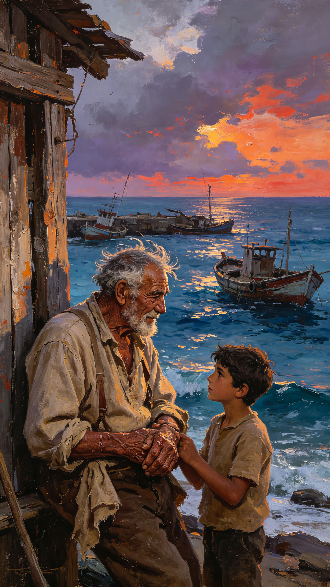
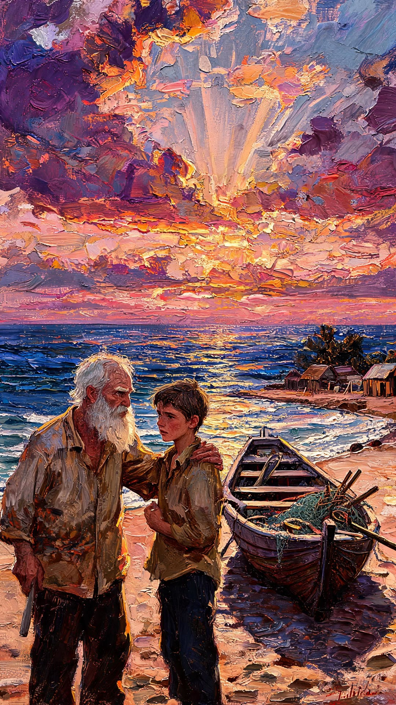
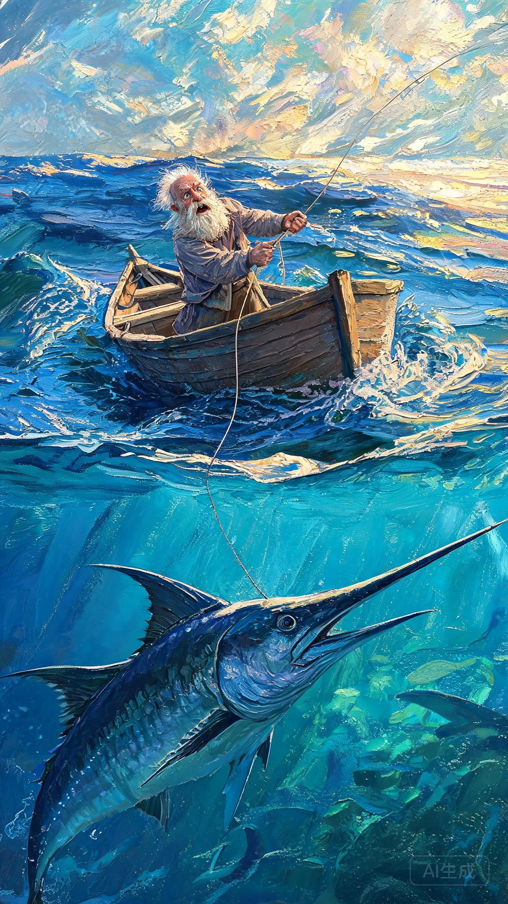
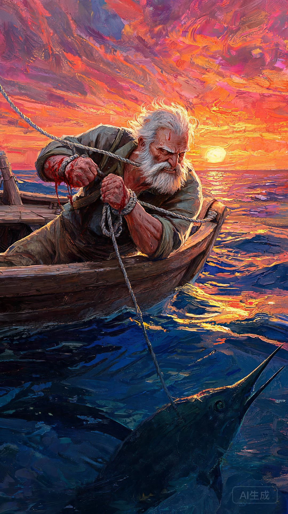
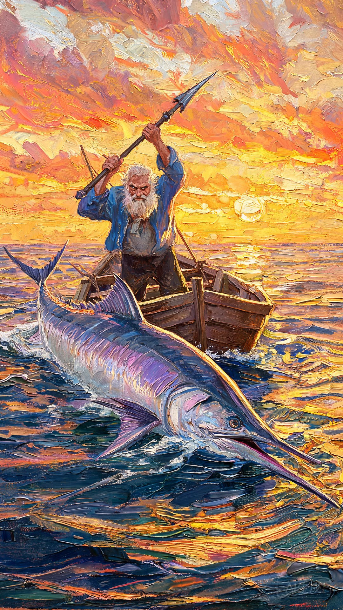
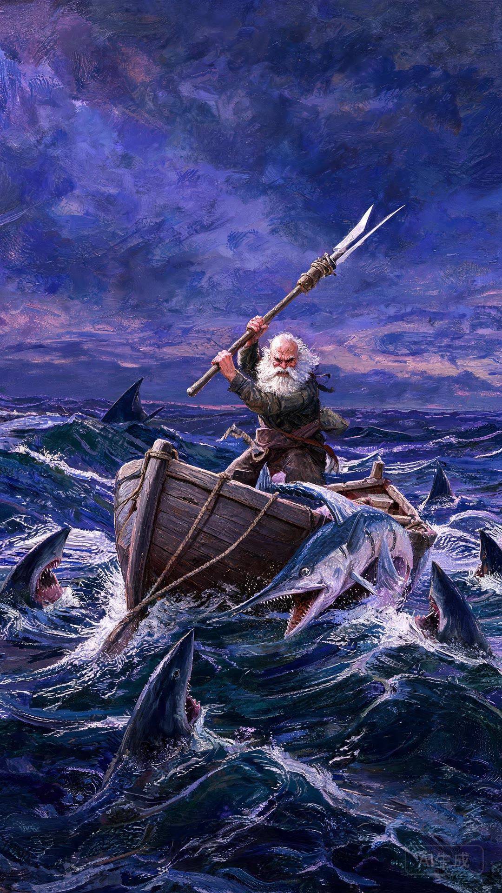
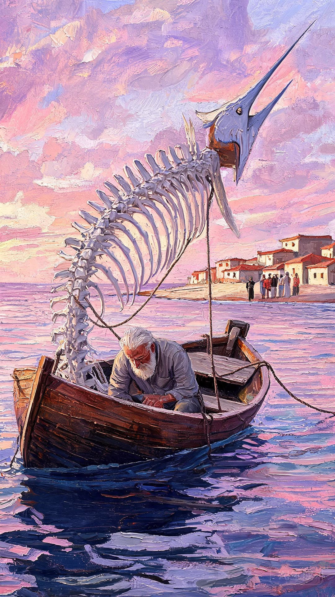
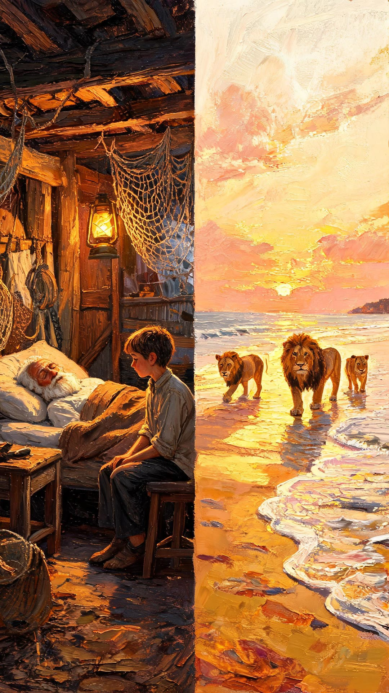

一片海，一条鱼
和一个不肯认输的老人
本项目基于海明威《老人与海》原著，用 AI 工具完成从剧本到成片的全流程： 拆解 8 个剧情分镜，逐段生成配图、旁白与提示词，最终合成一支 68 秒的名著讲解短片。
- 书名《老人与海》
- 画幅16:9
- 时长68 秒
- 分辨率1920 × 1080
- 段落8 段
作品：《老人与海：大海之上的不屈灵魂》
选取原著中从开篇到结局的八个关键节点，用统一的古典油画风格串成一条完整情绪线。
- 片名
- 《老人与海：大海之上的不屈灵魂》
- 结构
- 片头 3 秒画面淡入 + 正文 8 段 + 片尾 3 秒画面淡出
- 旁白
- 中年男声，沉稳厚重；语速 140 字 / 分钟；总时长 68 秒
- 画面
- 8 张 9:16 竖屏配图，逐段转为动态素材，剪辑为 16:9 成片
- 字幕
- 思源黑体；画面底部居中，半透明黑色底条
- 转场
- 淡入淡出，镜头之间缓慢叠化
- 统一画风
- 古典油画质感，低饱和度，电影光影，写实海洋人物
八段分镜
从渔村到深海，再到空手而归的港湾 —— 八段画面，一条不断往下压、又始终不折断的线。
渔村老人 → 独自出海 → 鱼线悸动 → 海上对峙 → 征服大鱼 → 鲨鱼突袭 → 归途残骨 → 不屈之心

老渔夫桑地亚哥已经连续八十四天没有捕到鱼，村里年轻渔夫都嘲笑他运气差，只有小男孩马诺林始终信任、陪伴着他。

第八十五天，老人独自驾小船驶向远海。他决心打破厄运，在深海寻找大鱼。大海辽阔又神秘，既是生存依靠，也暗藏危险。

鱼钩被巨大的马林鱼咬住。这条鱼力量极强，拖着小船往深海漂流。老人双手紧紧拉住鱼线，手掌被鱼线割伤。

老人和马林鱼僵持了整整两天两夜。没有食物，手上伤口不断流血，身体疲惫到极限，但他始终不肯放弃，心里默念：人不是为失败而生的。

老人拼尽全部力气，终于刺中马林鱼。大鱼鲜血染红海水。他把大鱼绑在船边，准备返航，内心充满胜利的喜悦。

血腥味引来了鲨鱼群。老人拿起鱼叉、船桨、短棍拼命驱赶鲨鱼。鲨鱼不断撕咬马林鱼的肉，大鱼一点点被啃食。

当老人回到岸边，绑在船边的马林鱼只剩下巨大的骨架。他耗尽所有力气，拖着疲惫身体回到小屋沉沉睡去。村里人惊叹这巨大鱼骨。

虽然老人没有带回完整的大鱼，但他没有被打败。《老人与海》想告诉我们：真正的胜利不在于结果，而是永不屈服的勇气。
分镜提示词
每一段分镜的三组提示词 —— 画面正向、负面、动态镜头。点开查看。
01 ｜ 渔村老人海边老渔夫 · 清晨大海
- 画面正向提示词
- 油画质感，海边老渔夫，清晨大海，柔和自然光，电影宽屏 16:9
- 负面提示词
- 卡通，畸形，丑陋，文字，水印
- 动态视频提示词
- 镜头缓慢向前推进，海面轻微波动，柔和运镜
02 ｜ 独自出海小木船 · 日出波光
- 画面正向提示词
- 写实油画，小木船漂浮在深蓝色大海，日出，海面波光，16:9 电影构图
- 负面提示词
- 卡通，扭曲，多余文字，水印，丑陋
- 动态视频提示词
- 镜头缓缓平移，海面微微起伏，缓慢移动
03 ｜ 鱼线悸动巨大马林鱼 · 水下拽线
- 画面正向提示词
- 海上，巨大马林鱼在水下，老渔夫奋力拽鱼线，自然光，油画质感，16:9
- 负面提示词
- 卡通，畸形，文字，水印，低画质
- 动态视频提示词
- 镜头轻微晃动，海水流动，鱼身缓慢摆动
04 ｜ 海上对峙黄昏海面 · 疲惫老人
- 画面正向提示词
- 黄昏海面，疲惫的老人，小船，巨大鱼影，暗沉柔和光影，油画，16:9
- 负面提示词
- 卡通，丑陋，文字，水印
- 动态视频提示词
- 缓慢推拉镜头，海面轻轻起伏
05 ｜ 征服大鱼血色海面 · 绑鱼返航
- 画面正向提示词
- 黄昏大海，小船，大鱼绑在船侧，海面泛血色，电影油画风格，16:9
- 负面提示词
- 卡通，畸形，文字水印
- 动态视频提示词
- 镜头缓慢环绕小船，海水流动
06 ｜ 鲨鱼突袭夜晚海面 · 鲨鱼围船
- 画面正向提示词
- 夜晚海面，鲨鱼围向小船，紧张暗调光影，油画质感，16:9
- 负面提示词
- 卡通，低画质，文字水印，畸形
- 动态视频提示词
- 镜头轻微抖动，海水涌动，鲨鱼游动
07 ｜ 归途残骨清晨海岸 · 巨大鱼骨
- 画面正向提示词
- 清晨海岸，小船，巨大鱼骨，疲惫老人，安静氛围，油画，16:9
- 负面提示词
- 卡通，文字水印，畸形
- 动态视频提示词
- 缓慢固定镜头，微风海浪
08 ｜ 不屈之心海岸远景 · 日出大海
- 画面正向提示词
- 海岸远景，日出，安静大海，氛围感油画，16:9
- 负面提示词
- 卡通，文字，水印，畸形
- 动态视频提示词
- 镜头缓慢抬升，海面缓缓波动
完整制作流程
从原著到成片，七个阶段，每一步都有可复核的落盘产物。
-
剧本
研读《老人与海》原著，梳理故事主线，拆分为 8 个连续剧情分镜，撰写每个镜头的旁白脚本。
-
提示词
为每一段分镜编写 AI 绘图正向提示词、负面提示词与动态镜头提示词。
-
配图
使用 AI 绘图工具，按八段画面描述生成 8 张统一油画风格的分镜参考图。
-
生视频
以分镜静态图为底图，搭配动态镜头提示词，用 AI 生成动态视频素材，剪辑合成为 68 秒完整成片。
-
写页面
编写网页 HTML 代码，划分作品、规格表、分镜、提示词、说明、制作流程、踩坑记录等板块。
-
发布
在本地整理素材文件夹，将图片、视频按分镜归类，上传至 GitHub 仓库，开启 GitHub Pages。
-
自检
在线访问网页测试，检查图片、视频加载，调整页面排版，修复路径、渲染等各类问题。
踩坑记录
都是实际跑通一遍之后才发现的，写在这里，下次不用再踩。
GitHub Pages 对中文文件名兼容性差，图片、视频用中文命名会加载失败。后续素材全部改为英文文件名。
文件夹名称大小写、路径拼写错误，会直接导致图片视频无法显示。每次上传素材后必须核对资源路径。
MP4 文件体积过大，上传仓库耗时久，网页打开后缓冲时间很长。需要控制视频时长与文件大小 —— 8K 原片经压缩后体积降到约 1/30。
最初做成左右两栏布局，与参考网页风格不一致。后改为单栏卡片式布局，信息层级更清楚。
视频一开始塞在分镜 01 的卡片里，作为「第一段素材」展示。后来改为提到页面顶部的「作品」板块，作为完整成片呈现。
最初页面只有分镜列表，缺少项目简介、规格表、制作流程等板块。补齐各模块后，整页才形成完整的叙事。
说明
本页面的用途与制作方式。
本页面用于展示名著改编 AI 视频创作作品，包含全部分镜素材、旁白、正向 / 负面提示词与动态镜头提示词。 所有素材均由 AI 生成，用于课程作品展示。
- 通过对话生成分镜旁白、AI 绘图提示词与视频动态提示词；
- 借助 AI 工具完成文生图、图片生成视频；
- 通过对话编写并迭代网页 HTML 代码，搭建展示页面。